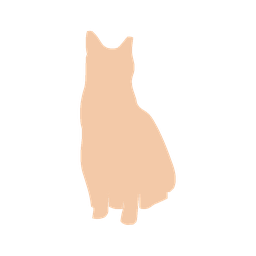

Event review
Likely sound class only; context is supplied by the person.
Meow detected8:42 PM · 1.8 sec
Needs reviewChoose a label to save feedback for Tiri.
Identity stays stable; event and device states are explicit.

Likely sound class only; context is supplied by the person.
Choose a label to save feedback for Tiri.
Today · 3 events · review uncertain ones
The avatar identifies Tiri. Text badges carry event and review state.